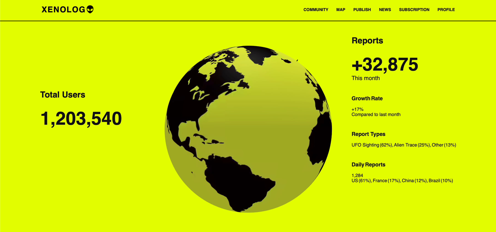
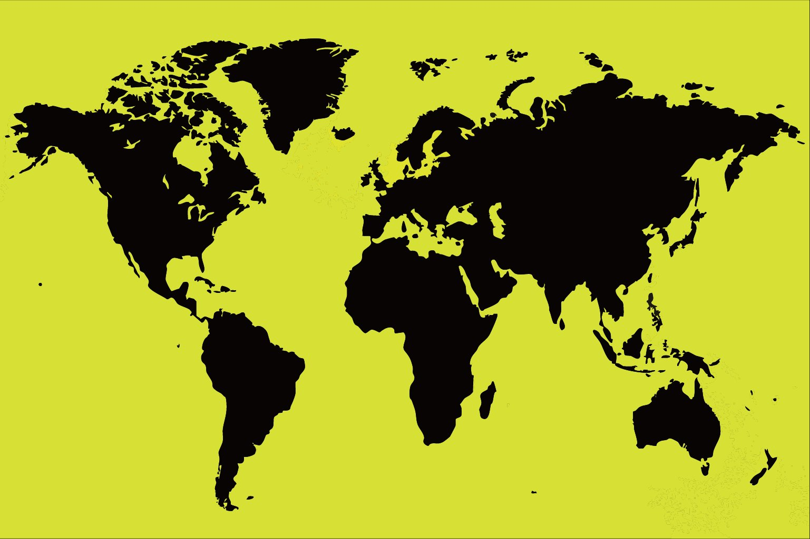
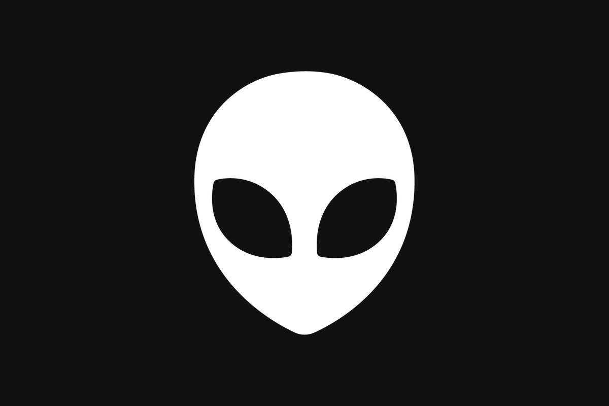

XENOLOG

The assignment was to design a website for a community I belong to or find interesting. I'm not part of the UFO sighting community, but I was curious about it, so I chose it.
Because the subject is space, I wanted to avoid the colors people expect from space. The community also felt niche to me. I used a fluorescent yellow with strong black contrast, which mainstream websites rarely use, to show that.
The rotating globe was hard to build. I made a flat map first and wrapped it around a sphere. The numbers on the home screen are invented, and I had to work out figures that could hold the layout together. I also had trouble finding open-source images I liked, so research took longer than I expected.
I designed the site and coded it with AI assistance.
- Type
- School project
- Date
- May 2025
- Role
- Designer
- Code
- HTML, CSS, JavaScript, with AI assistance

